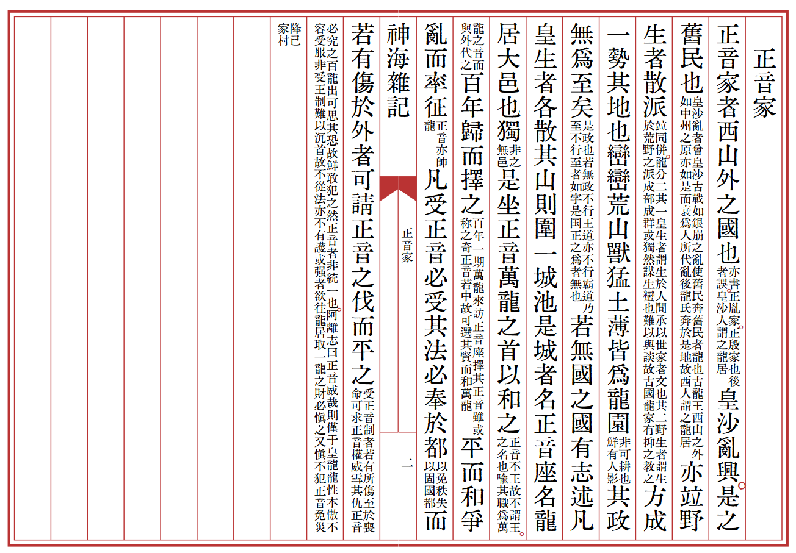

Text

#### 正音家
正音家者，西山外之國也。
> 亦書正胤家、正殷家也。後者誤。皇沙人謂之龍居。
皇沙亂興，是之舊民也，
> 皇沙亂者，曾皇沙古戰，如銀崩之亂，使舊民奔。舊民者，龍也，古龍王西山之外如中州之原，亦如是而衰，爲人所代，亂後龍氏奔於是地，故西人謂之龍居。
亦竝野生者散派，
> 竝同併。龍分二：其一皇生者，謂生於人間承以世家者，文也；其二野生者，謂生於荒野之派，成部成群，或獨然謀生，蠻也，難以與談，故古國龍家有抑之教之。
方成一勢。其地也巒巒荒山，獸猛土薄，皆爲龍園。
> 非可耕也，鮮有人影。
其政無爲：至矣；
> 是政也若無政，不行王道亦不行霸道，乃至不行。至者如字，是国政之爲者，無也。
若無國之國。有志述：「凡皇生者各散其山，則圍一城池。是城者名正音座，名龍居，大邑也獨。
> 非之無邑。
是坐正音，萬龍之首，以和之；
> 正音不王，故不謂王。之名也，喻其職，爲萬龍之音，而與外代之。
百年歸而擇之，
> 百年一期萬龍來訪正音座，擇其正音，雖或称之奇，正音若中，故可選其賢而和萬龍。
平而和爭，亂而率征。
> 正音亦帥龍。
凡受正音，必受其法，必奉於都，
> 以免秩失，以固國都
而若有傷於外者，可請正音之伐而平之。」
> 受正音制者，若有所傷，至於喪命，可求正音權威雪其仇，正音必究之。百龍出可思其恐，故鮮敢犯之，然正音者非統一也。阿離志曰：「正音威哉，則僅于皇龍。龍性本傲，不容受服，非受王制，難以沉首，故不從法，亦不有護。或強者欲往龍居取一龍之財，必慎之又慎，不犯正音，免災降己家村。」